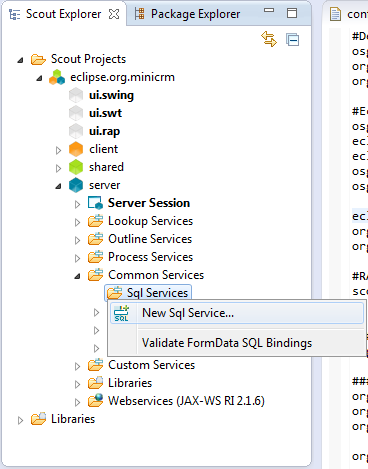

| Set up SQL Service | ||
|---|---|---|
| | |
| Get example database | Write the first page | |
We want to connect to a database. In Scout terms, the client might want to fill a table with data from the database. It calls a service on the server which provides the desired data. That service in turn has to get the data from somewhere. In this case, it sends a SQL statement to yet another service, the SQL service. This service will handle connecting to the database and the rest.
Eclipse Scout comes with support for Apache Derby out of the box. Support for PostgreSQL and Oracle is trivial to add (For more information, see: How To write a JDBC connection bundle). Switching to other solutions like Hibernate is possible, but beyond the scope of the tutorial.
We will use Apache Derby in this tutorial. Derby is an open source relational database implemented entirely in Java and available under the Apache License.
Go to the server node and open the tree, drill down to Sql Services below Common Services and right-click on it in order to open the wizard to create a new SQL service.

Name your new service DerbySqlService and choose AbstractDerbySqlService from the combobox Super Type then click Finish.
Adjust the settings in your DerbySqlService by editing the Jdbc Mapping Name. It should point to the folder where you unzipped the DerbyDb to. That's the example database you downloaded at the beginning of this tutorial.
Also make sure you have the right Jdbc Driver Name set.
Use minicrm for both username and password.
|  | |
| Get example database | Write the first page |